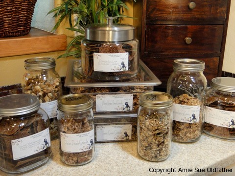

Weekend Kitchen Madness!

This weekend I was on a roll! Often times when it starts, I can’t stop it…so I just ran with it. :) I made so many recipes, far to many to release all at once. I don’t want to overwhelm you with emails of me in the kitchen. So I will just list all the up and coming recipes that you can look forward to.
I love days like these though. It’s like getting into the zone! But I have to tell you my feet were killing me by the time I finally sat down. Poor little piggies! Bless my husbands heart for he sat at the other end of the couch and asked for my feet, where he proceeded on giving them a good healthy rub down. Aaaah, he is amazing.
I think Bob is well set on treats for now. The counter top is now loaded for the snack attacks that continually visit him . So let’s see, what did I make the past two days….
- Raw Mayonnaise
- Chocolate Covered Raspberry Almond Cookies
- Honey Mustard Salad Dressing
- Chocolate Raspberry Spinners
- Peanut Butter Raisin Bars
- C.O.R.E. Flax Crackers
- Tropical Pineapple Mango Granola
- Sweet Grain Granola
- Walnut Banana Bread Granola
- Radish, Cucumber and Apple Salad
- Lime & Cilantro Flax Crackers
- Sting “N” Linger Salsa Flax Crackers
- Roasted Chili Habanero & Roasted Tomato-Tomatillo Flax Cracker (x-hot)
Hmmm, I think that is it…. Do any of you have crazy days in the kitchen? If so, I would love to hear about them. I hope you all had a blessed and relaxing weekend!
Until the next recipe….Amie Sue
© AmieSue.com